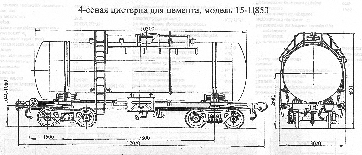

Назначение: для перевозки цемента
Параметры
| Номер проекта | 825-00-1 |
| Технические условия | 825-ТУ-1 |
| Модель вагона | 15-Ц853 |
| Тип вагона | 936 |
| Изготовитель | ПО "Ждановтяжмаш" |
| Грузоподъемность, т | 58 |
| Масса тары вагона, т | 25,3 |
| Нагрузка: статическая осевая, кН(тс) |
203,84(20,8) |
| погонная, кН/м(тс/м) | 67,91(6,93) |
| Объем котла, м3 | 61,17 |
| Скорость конструкционная, км/ч | 120 |
| Габарит | 02-ВМ(02-Т) |
| База вагона, мм | 7800 |
| Длина, мм: по осям сцепления автосцепок |
12020 |
| по концевым балкам рамы | 10800 |
| Высота от уровня верха головок рельсов максимальная, мм | 4621 |
| Количество осей, шт. | 4 |
| Модель 2-осной тележки | 18-100 |
| Наличие переходной площадки | нет |
| То же с ручным тормозом | нет |
| Наличие стояночного тормоза | есть |
| Диаметр котла внутренний,мм | 2800 |
| Длина котла наружная,мм | 10300 |
| Наличие смотрового люка | нет |
| Условное рабочее давление в котле (по регулировке предохранительного клапана), МПа(кгс/см2) | 0,2(2,0) |
| Удельный объем, м3/т | 0,845 |
| Давление в котле, МПа(кгс/см2): при разгрузке |
0,22(2,0) |
| при загрузке | |
| Производительность выгрузки, т/ч | |
| Количество,шт.: загрузочных люков |
1 |
| аэролотков | 4 |
| аэроплиток | 2 |
| Диаметр, мм: лазового люка |
575 |
| загрузочного люка | 575 |
| разгрузочного патрубка | 100 |
| Давление создаваемое в котле при гидравлическом испытании, МПа(кгс/см2) | 0,3(3,0) |
| Количество секций котла, шт. | 1 |
| Максимально допустимая температура загружаемого продукта, °C | ±50 |
| Угол наклона к горизонту, град: откоса |
50 |
| аэролотков | 6 |
| Год постановки на серийное производство | 1961 |
| Возможность установки буфера | нет |